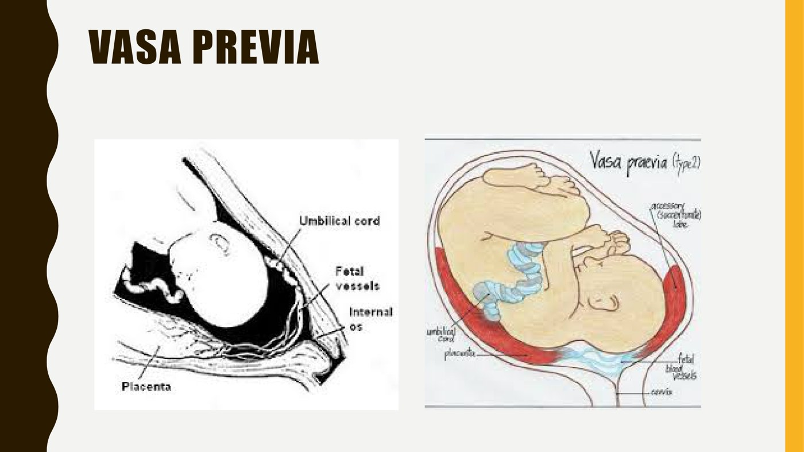

Antepartum Hemorrhage & Abnormal Placentation
- Bleeding in the 2nd or 3rd trimester: assess the mother and the fetus, and always ask whether this is labour (show).
- Abruption = painful. The placenta separates early, with bleeding, a tender, firm uterus and “unrelenting contractions”. It is a diagnosis of exclusion. A concealed abruption shows no blood but causes severe pain and more fetal distress.
- Previa = painless. The placenta lies over or beside the os. Never do a digital cervical exam until ultrasound shows the placenta is clear. A complete previa means caesarean. A previous caesarean raises the risk of the accreta spectrum.
- Vasa previa = fetal blood. Unprotected fetal vessels run over or within 2 cm of the os. A small bleed can cause rapid fetal distress. The Apt test detects fetal blood.
- Work-up: ABCs and an NST; CBC, INR/PTT/fibrinogen, creatinine, LFTs, group & screen. At ≥ 35–36 weeks with active bleeding, deliver. The main danger of ongoing bleeding is consumptive coagulopathy.
Learning Objectives
- Compare and contrast causes of antepartum hemorrhage.
- Define placental abruption, placenta previa and vasa previa.
- Describe sites from which bleeding may arise during pregnancy.
- List investigations and treatment for a woman presenting with hypotension and vaginal bleeding in pregnancy.
- Outline risk factors for placental abruption.
- List complications of placenta previa.
- Label the sites/origin of bleeding for each pathology.
- Describe how hemorrhage leads to coagulopathy.
Dr. Jordan Schmidt, obstetrics (Dr. Harrison Banner is also listed on the module). One 22-minute recording; Elentra lists 23. This covers the second and third trimesters; first-trimester bleeding is in 4.9 and 5.10. How to resuscitate a woman in shock is 6.6.
Where the Blood Comes From
| Source | Causes |
|---|---|
| Non-obstetric, common | Hemorrhoids, vulvar/vaginal varicosities; bladder infection, renal stones (hematuria can be mistaken for vaginal bleeding) |
| Non-obstetric, rare | Cervical, vaginal or perineal masses; lacerations. Treated as they would be outside pregnancy. |
| Placental / uterine | Placental abruption, placenta previa — maternal blood |
| Cervical | Labour — cervical dilatation often causes mild bleeding, the show. Always consider labour, because it is managed completely differently. |
| Fetal | Vasa previa — fetal blood |
The Three Placental Causes Side by Side
| Placental abruption | Placenta previa | Vasa previa | |
|---|---|---|---|
| What it is | Premature separation of the placenta from its maternal (uterine) attachment | Placenta implanted over or just beside the internal os | Unprotected umbilical vessels crossing the cervix or within 2 cm of the os |
| Whose blood | Maternal | Maternal | Fetal |
| Pain | Painful; contractions that don't let up | Painless | Painless; often at membrane rupture |
| Uterus | Tender, sometimes rigid | Soft, non-tender | Non-tender |
| Fetus | Usually stable at first; distress more likely if concealed or large | Usually stable unless the mother becomes unstable | Rapid fetal distress, even from a small volume |
| How often | ≈ 1 in 200–300 | ≈ 1 in 300 at term | ≈ 1 in 2500 |
| Diagnosis | Diagnosis of exclusion — ultrasound may show nothing | Ultrasound, usually the 18–20 wk anatomy scan | Ultrasound with Doppler; Apt test on the blood |
| Classic trap | Concealed: severe pain, no visible blood | Digital cervical exam can cause a massive bleed | Mistaken for show while the fetus exsanguinates |
Placental Abruption
Also called abruptio placentae: premature separation of the placenta from the uterine lining. About 1 in 200–300 pregnancies, more often in a high-risk centre like London. It is most common in the third trimester (35–38 weeks) but can happen at any gestation. In the first trimester the same process is usually called a subchorionic hemorrhage.
| Classic presentation | Risk factors |
|---|---|
|
|

Blood in the uterine cavity is a potent irritant to the myometrium, so an abruption often turns into active labour (and it is one cause of preterm labour, 6.1). A clot behind the placenta stretches and peels the membranes, raising the risk of membrane rupture. Much of the blood drains out through the cervix, so ultrasound is often normal. That is why abruption is diagnosed only once the other causes are ruled out.
Placenta Previa
The placenta implants over, or just beside, the internal cervical os. It is usually found at the 18–20 week anatomy scan (5.15). Up to 10–15% of scans at that stage look like a previa, but most resolve, and only about 1 in 300 pregnancies still have one at term.
Patients are told the placenta has “moved”. What actually happens is that the uterus grows by stretching the muscle between the placental edge and the cervix. A placenta implanted close to the os early in pregnancy ends up further away.
| Feature | Detail |
|---|---|
| Bleeding | Painless, mild to severe. The fetus stays stable unless the mother becomes hemodynamically unstable. |
| Sentinel bleed | Typically around 26–28 weeks: short, mild–moderate, stops on its own. Many then stay stable to term, but 30–40% bleed again. |
| The main danger | Sudden, severe hemorrhage → hypovolemia and shock, and a consumptive coagulopathy that can develop fast. It may need aggressive transfusion and clotting-factor replacement before and after delivery. |
| Delivery | Complete previa → caesarean. A marginal previa with the edge > 1 cm from the os may allow a vaginal birth in select cases, with careful counselling. |
| Postpartum | Higher risk of needing a hysterectomy to control bleeding |
| Anterior vs posterior | Location doesn't change the risk of spontaneous bleeding. But an anterior previa means cutting through the placenta to reach the baby at caesarean, so more surgical bleeding. |
Any cervical change, even slight thinning or 1 cm of dilatation, can shear the placenta off its attachment. The endometrium is designed to host and later shed a placenta; the cervix is not. There is also almost no myometrium in the cervix, so once the placenta separates there is no muscle to clamp down on the vessels. That is also why the lower segment keeps bleeding after delivery (6.5). And it is why a digital cervical exam is forbidden until ultrasound has shown the placenta is clear.

Previous caesarean → the accreta spectrum
A previous caesarean or other uterine surgery raises the risk of abnormally invasive placentation. The endometrium may not fully cover the old scar, so the placenta grows straight into the myometrium. Previa and a previous caesarean together are the classic set-up.
| Type | Depth of invasion |
|---|---|
| Accreta | Attaches to the myometrium; minimal invasion |
| Increta | Invades deep into the myometrium |
| Percreta | Goes through the whole wall, to the serosa and beyond (bladder, abdomen) |
Invaded myometrium can't contract, and the placenta may not separate at all. Almost all need a hysterectomy, unless the invaded area is very focal and can be oversewn or excised for a woman who strongly wants to keep her uterus.
Vasa Previa
Unprotected umbilical (fetal) vessels run through the membranes over the cervix or within 2 cm of it. They rupture when the waters break or labour starts. Unlike abruption and previa, the blood is fetal, so a small volume can cause rapid fetal distress. About 1 in 2500 pregnancies.
| Type | Where the exposed vessels come from |
|---|---|
| Type 1 | A velamentous cord insertionThe umbilical cord inserts into the membranes rather than the placental disc, so its vessels run unprotected by Wharton's jelly through the membranes before reaching the placenta.: the cord ends in the membranes, and its vessels run unprotected to the placenta |
| Type 2 | A succenturiate lobeAn accessory lobe of placenta implanted separately from the main disc, connected to it by fetal vessels running through the membranes. or multilobed placenta: fetal vessels cross the membranes between the lobes |

Assessment and Management
1. Degree of bleeding, mother and fetus
- Mother: ABCs, and O2 and IV access if unstable
- Fetus: non-stress test — baseline, accelerations, decelerations (6.4)
2. History
Where is the placenta on the anatomy scan? Earlier bleeding: a sentinel bleed, a subchorionic hemorrhage, an earlier abruption? Hypertension, autoimmune disease, trauma, smoking and cocaine?
28 weeks, no prenatal care, painless bleeding
She has soaked a pad over two hours and has no pain or contractions. Do: a focused history (previous bleeding, trauma, smoking, cocaine), an abdominal exam (tenderness, presentation), and bloodwork. Don't: a cervical exam. With no prenatal care, nobody knows where the placenta is. Examining a previa can cause a significant hemorrhage, so ultrasound comes first.
3. Stat bloodwork
| Test | Why |
|---|---|
| CBC | Baseline hemoglobin and platelets |
| INR, PTT, fibrinogen | Is a consumptive coagulopathy (DIC) developing? |
| Creatinine | Kidney function, especially if the bleed is severe or she is unstable |
| Liver function tests | Rule out preeclampsia or acute liver injury — hypertension is a cause of abruption (5.16) |
| Group and screen | In case she needs a transfusion |
4. Is it fetal blood?
| Test | Looks for | Used when |
|---|---|---|
| Kleihauer–Betke (fetal–maternal hemorrhage screen) | Fetal red cells in the maternal circulation | Trauma (car crash, fall down the stairs): these can truly disrupt the fetal–maternal interface. A typical abruption peels the placenta off intact, so fetal blood stays inside it. |
| Apt test | Fetal hemoglobin in the vaginal blood | Fetal distress with a stable mother, or a known vasa previa or velamentous cord. A positive result means vasa previa. |
Both work because fetal hemoglobin differs from adult hemoglobin. Fetal bleeding doesn't change the mother's INR or PTT; severe maternal bleeding from a previa or abruption can.
5. Where she goes
| Situation | Plan |
|---|---|
| Active bleeding, preterm | Admit to the birthing unit for continuous fetal monitoring. Steroids for the lungs and/or MgSO4 for neuroprotection as appropriate (6.1). NICU / tertiary consult if extremely premature (< 28–32 weeks). Bloodwork every 4–6 h if bleeding persists or the first results were abnormal. |
| Term or late preterm (> 35–36 weeks), active bleeding | Deliver, even if both are stable. There's little to gain by staying pregnant, and a stable placenta can destabilize. Induction and vaginal birth if mother and fetus are reassuring. Caesarean for a complete previa or if either is not reassuring. |
| Preterm, stable, bleeding settles | Antenatal ward: regular NSTs; ultrasound for growth and placental function if not done recently; bloodwork every 6–8 h if concerning, daily once settled for 2–3 days. A big bleed at 32 weeks is not an automatic delivery. Even 48 h lets the steroids work. |
How Hemorrhage Becomes Coagulopathy
The placental bed is a high-flow interface with large exposed vessels. When it bleeds, the body throws platelets and clotting factors at vessels it can't clot over, and uses them up faster than it can make them. The result is a true DIC: the mother now bleeds from everywhere, not just the placenta. That is why fibrinogen is in the stat bloodwork. It is why treatment is aggressive replacement of blood products and clotting factors, and why delivery may be needed if mother and fetus can't be stabilized quickly. The same process drives obstetric shock in 6.6.
| Complications of placenta previa | |
|---|---|
| Yes | Maternal hemorrhagic shock · DIC · preterm birth · caesarean delivery · maternal transfusion · hysterectomy |
| No | Fetal hemorrhage (previa blood is maternal) · preeclampsia (not associated) |
Built from Dr. Jordan Schmidt's “Antepartum Hemorrhage/Abnormal Placentation” module (one 22-minute recording), its 22-slide deck, and the module's six knowledge checks, whose tested facts are all covered above. The three drawings are the deck's only figures. The comparison table and the flowchart are drawn for these notes. Added here: the current SOGC terms (placenta previa vs low-lying placenta within 20 mm), checked 2026-09-30 in a BC Women's Hospital memo that adopts the SOGC 2020 guideline. The full guideline is paywalled. The previa frequency at term is the slide's 1 in 300; the recording's “one in three” is a captioning slip. Auto-captions garbled varicosities as “very Cassidy's”, myometrium as “Miami”, hypovolemia as “hyperkalemia”, vasa previa as “phase of previa” and “baiser previa”, succenturiate as “suction chariot”, Kleihauer–Betke as “cliffhanger bet key” and Apt as “app to”; the slides were followed.